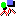

| |
|
To create a new SVG element in a document, move the insertion point to the position where you want to insert it, and then click the Graphics button. The Graphics button () displays a palette that stays on the screen until you click Done on the palette.
The available graphics elements are:
line in SVG,
rect in SVG with no rx or
ry attributes,
rect in SVG,
circle in SVG,
ellipse in SVG,
polyline in SVG,
polygon in SVG,
path in SVG,
path in SVG,
foreignObject in SVG,
text in SVG
When you select a shape in the palette and the selection is in the HTML structure of the document, Amaya creates a new SVG element just at the beginning of the current selection and inserts the selected shape into this new SVG. Amaya generates SVG drawings as blocks, between paragraphs. To display a drawing inline, you must create it between paragraphs then edit the source code to move it.
When the current selected element is a SVG element, the new shape is added to the current SVG drawing. The new shape is added after and can overlap previous shapes.
The creation of a shape requires direct interaction:
You can insert an image within a SVG drawing. Choose Image from the Types menu or click the Insert Image button from the button bar and proceed in the same way as in HTML.
To insert a mathematical expression into a SVG drawing, click the
Math palette when the selection is within an SVG. Amaya will
generate a SVG foreignObject to embed the MathML markup.